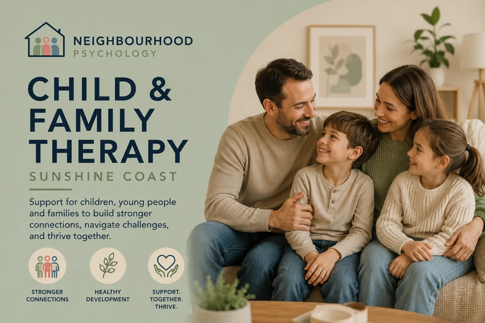

Warm, practical support for children and families navigating big feelings, difficult behaviour, and life's harder moments. Parents are part of the process, not just onlookers.

Children don't always have the words for what's going on. What looks like difficult behaviour or emotional outbursts is often a child trying to manage something they haven't yet got the tools to handle. At Neighbourhood Psychology, we work with children and families in a way that meets kids where they are — through play, activity, conversation, or whatever helps them feel safe enough to engage.
Parents and caregivers are always part of the work. What happens between sessions matters just as much as what happens during them, and we work closely with families to make sure progress translates into real life at home and at school.
Who this helps: Families with children or teenagers experiencing emotional regulation difficulties, anxiety, school refusal, behaviour challenges, low confidence, social struggles, sleep problems, or the effects of family change. Parents and caregivers are actively involved throughout — progress happens between sessions too, not just during them.
Child and family therapy can be useful for a wide range of concerns, including:
If your child is experiencing anxiety, OCD, or has recently received a diagnosis of ADHD or autism, we have dedicated pages for those areas too.
For younger children, play is the natural language of therapy. Play-based approaches allow children to explore and communicate feelings, experiences and fears in a way that feels safe and natural to them — without needing to sit across from someone and talk about "how they feel".
This might involve structured activities, sandplay, storytelling, art or simply playing alongside a child and using that shared space to build trust and understanding. The specific approach is always tailored to the individual child.
Many of the families who come to us are doing everything right — they're engaged, caring parents who are simply finding that what usually works isn't working. Parent coaching offers practical, evidence-based strategies for responding to difficult behaviour, supporting emotional regulation, and strengthening the parent-child relationship.
Sessions may involve parents attending alongside their child, attending separately, or a combination of both — depending on what makes most sense for your family.
Where appropriate and with your consent, we can liaise with teachers and school counsellors to share recommendations and support consistency between home and school. This is often one of the most valuable things we can do for children who are struggling in the classroom.
If you've noticed a change in your child's behaviour, mood or wellbeing that's been ongoing for more than a few weeks, or that's affecting their daily life, school or relationships, it's worth getting a professional opinion. You don't need to wait until things are at a crisis point. Early support tends to produce better outcomes.
This depends on the child's age and what we're working on. For younger children, parents are usually closely involved. For older children and teens, we'll discuss what level of parental involvement makes sense. Parent-only sessions are sometimes the most useful place to start.
We work with children from early primary school age through to adolescence. If you're unsure whether we're a good fit for your child's age or presentation, just get in touch and we'll let you know.
No referral is needed to book an appointment. If you'd like to access Medicare rebates through a Mental Health Care Plan, a GP referral is required. We can walk you through this process.
This is very common, especially with older children and teens. It's often helpful to start with a parent-only session so we can discuss the situation and think together about how to approach it. Forcing reluctant attendance rarely helps — but there are usually ways to make the idea of coming feel less daunting.
Whether it's a big life change, a long-standing struggle, or something you can't quite put your finger on — we're here to help you work it out.